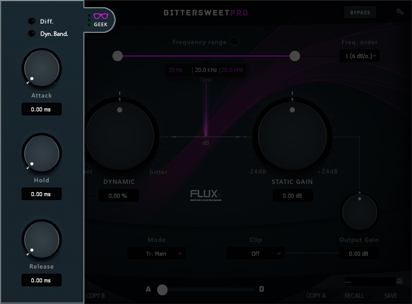

3 Geek
Clicking the Geek glasses opens a window with an additional range of parameters providing extended control of the transient processing envelope.

| Diff. / Dyn. Band | Hold |
| Attack | Release |
3.1 Diff.
Diff. is a key listener for the Difference between input and output signal (at the final output, after the clipper).
Value Range: Enabled/Disabled
Default Value: Disabled
3.2 Bandwidth
Value Range: Static BW/Dynamic BW/Flat Sum
Default Value: Static BW
Static bandwidth provides a constant Q factor, no matter of the gain factor of the filter. It’s computed by having a constant bandwidth at +- 3 dB from 0 dB.
Dynamic bandwidth provides a dynamic Q factor, dependent on the gain factor of the filter. It’s computed by having a constant bandwidth at +- 3 dB from peak levels of the filter.
Flat Sum is a more traditional way of computing the Q factor. The bandwidth is constant for the gain factor divided by two.
3.3 Attack
Adjusts the attack time for the transient processing envelope.
Value Range: 0.00 ms / 200.00 ms
Default Value: 0.00 ms
3.4 Hold
Adjusts the hold time for the transient processing envelope.
Value Range: 0.00 ms / 200.00 ms
Default Value: 0.00 ms
3.5 Release
Adjusts the release time for the transient processing envelope.
Value Range: 0.00 ms / 500.00 ms
Default Value: 0.00 ms